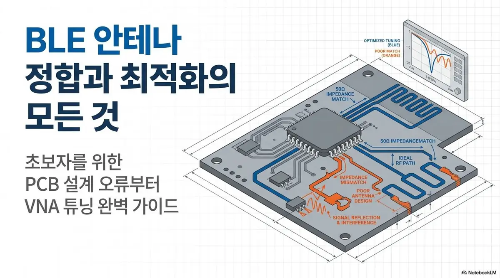
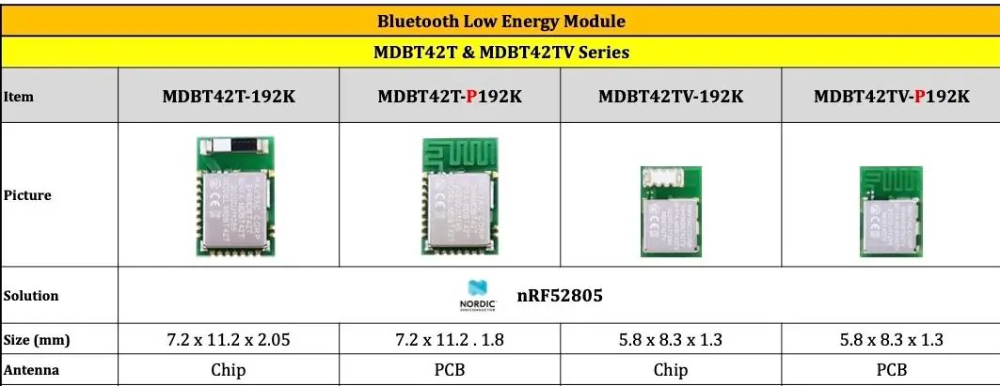

Technical Library / 02
회로 너머의 고민.
설계 안의 해답.
RF·BLE 개발 현장에서 축적한 기술 문서.
회로와 안테나, 계측과 튜닝의 세부 사항을 살펴보세요.
TECHNICAL PAPERS02 DOCUMENTS

BLE / RF / ANTENNA
BLE 안테나 정합.
잘 맞춰야, 잘 닿으니까.
50Ω 임피던스 매칭, 안테나 유형 비교와 VNA 튜닝 실무를 살펴봅니다.
문서 읽기 ↗

NORDIC / HARDWARE
nRF52805 모듈 설계.
작은 칩에 담을 큰 고민.
nRF52805 WLCSP 아트워크, 부품 구성과 RF 튜닝의 검토 항목을 살펴봅니다.
문서 읽기 ↗
From Knowledge to Product
읽은 기술에서.
작동하는 제품으로.
현재의 개발 과제와 필요한 기능부터 알려주세요.